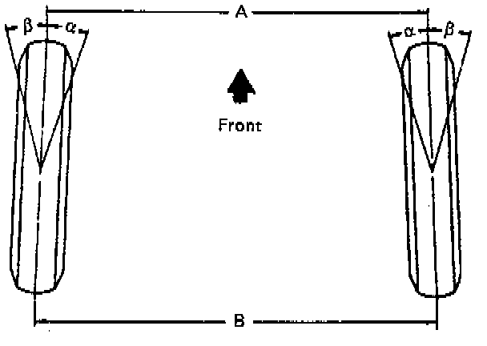

Toe-In

Toe-in is the turning of the front wheels. The actual amount of toe-in is normally a fraction of a degree. Toe-in is measured from the center of the tire treads or from the inside of the tires. The purpose of toe-in is to insure parallel rolling of the front wheels and to offset any small deflections of the wheel support system which occurs when the vehicle is rolling forward. Incorrect toe-in results in excessive toe-in and unstable steering. Toe-in is the last alignment to be set in the front end alignment procedure.